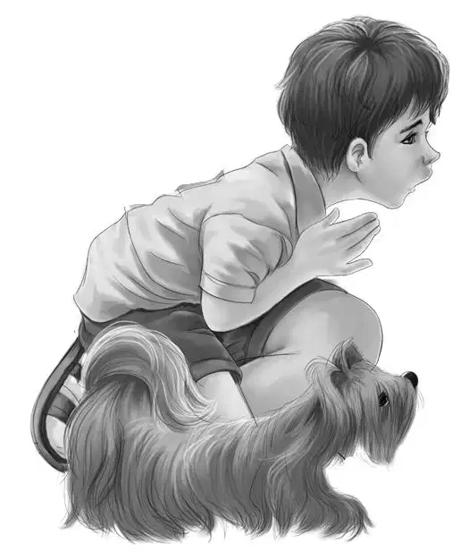
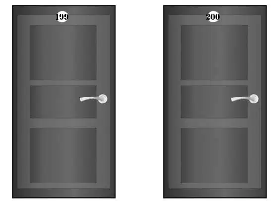
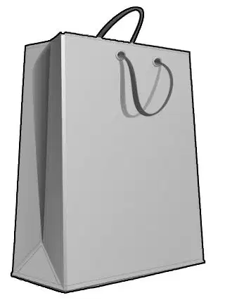
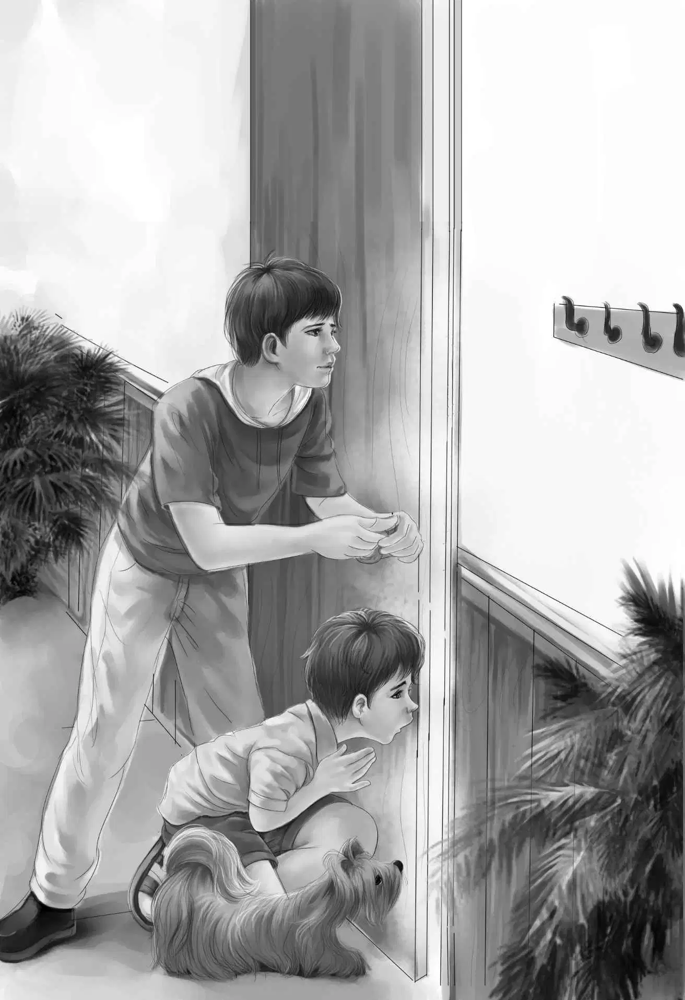
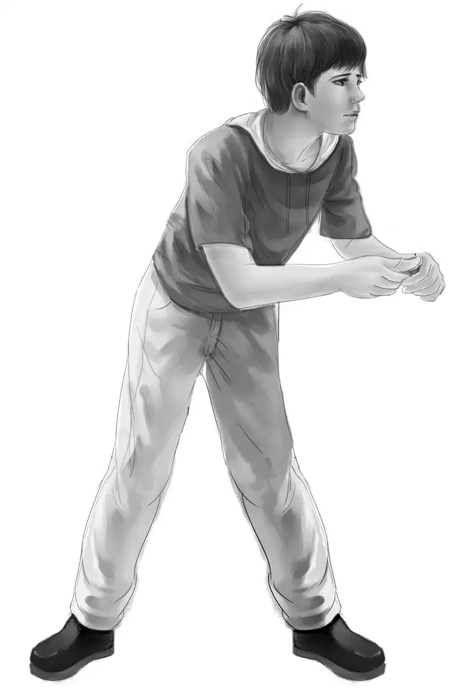
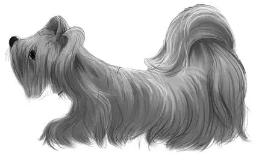

Danger in the Night

五点钟左右，奥登兄妹按计划赶到了阿什比的汽车旅馆，他们带着小狗，骑车来到了办公窗口，订了两间相邻、又有一扇门相通的房间。旅馆经理探头向外看了看，发现了小狗。
“小狗可不能进旅馆呀！”经理说，“这是我们的规定。”
“噢，天哪！”杰西叫了起来，“那就不能住这儿了。我们必须带着它才行。”
亨利转过头，对小影儿下令道：“蹲下！”小狗果然乖乖地蹲了下来。
“哇噢！”经理叫了一声，“还真是只听话的小狗！假如你们让它别再呜呜叫，它会听么？”
亨利不由得笑了起来：“这个嘛，我们倒还没试过。”
恰在此时，小影儿又是一声呜咽。班尼走过去，跪起一条腿儿，小狗抬起头，一对小眼睛躲在满脸灰灰的毛发后望着他，继续呜咽着。
“小影儿，你要是再哼唧，咱们就不能住在这儿了。”班尼说道。
小影儿又是几声呜咽。
“不可以！”班尼严厉地说，“这样不可以！”他冲小狗摇了摇头。小影儿张了张嘴，刚想叫，却被班尼捂住了鼻子，捂了个严严实实。小狗满心不高兴，用力挣扎几下，又是一声哀号。
“别叫啦！”班尼大声喝道。
小影儿之前哪里听过这种训斥？一时间，它隐约领会到了班尼的意思，当下偏起小脑袋，抬头朝经理望去，似乎在向他证明，它是多么的听话。
“嗯，这副模样倒挺乖巧。”经理说道，“这样吧，虽然旅馆规定不准带狗，可看在小狗这么听话的分上，就让你们住最边上的两间吧，199和120号。它可以待在门厅里，但要是再叫一声，就只能被请出去了。”
“那么——我们也只能跟着被请出去了。”班尼说，“听见没有，小影儿？这可不是闹着玩的，我现在肚子饿得咕咕叫哩！”
维莉脱口而出：“您这儿的餐厅真不错！”奥登兄妹看到有人正在里边吃饭。
“是啊，这是刚刚建好的新餐厅。”经理说，“我们现在正供应晚餐呢，你们要是愿意，马上就可以去吃！”
“愿意，愿意！”班尼连声叫道，“我们把行李放到房间后，马上就过去！”
“记得把小狗留在房间里。”经理说道，“我对它的晚餐另有安排。”说完，他情不自禁笑出声来。孩子们虽然不知道是什么安排，但料想不会太差。

经理给了亨利两把钥匙，指了指房间的方位后，说道：“转过那个墙角，把车子停在最边上就可以了。”
小影儿一路小跑地跟在几位新主人身后，经理望着他们的背影，不住地微笑着。
亨利打开房门，发现居然有一个方方正正的小门厅，于是他把雨衣铺在地上，对小影儿说道：“趴上来，不准乱跑哦！”
小影儿一声不响地趴在雨衣上，抬头望着亨利。
“好狗狗。”班尼说道，“还有要记住，别瞎哼哼！我们会给你带好吃的回来的。”
“瞧你说话的样儿，”维莉说道，“好像它能听懂似的。”
“没准它还真听得懂。”班尼答道，“谁知道呢！”
孩子们并没有打开行李，也没有多逗留，各自洗了手后，便出了门。
“不准动哦！”亨利又对狗狗叮嘱了一句，转身出门，上了锁。
一家人走进餐厅，发现里面的一切都新簇簇、洁崭崭的。正在餐厅另一边忙碌着的经理，看到孩子们后，冲他们笑了笑。孩子们找到一张桌子，坐了下来。
“这可是咱们见过的最好的餐厅了。”杰西说道，“我要放开肚子大吃一顿！”
于是，他们尽情享用起这顿丰盛的晚餐来。
吃完，班尼满意地赞道：“好吃极啦！眼下就是再要我骑20英里，也没有问题哩！”
“还是把力气留到明天吧。”杰西说道。

话音刚落，只见经理走了过来，凑到亨利耳边低声说了些什么，然后递给他一个褐色的纸袋：“这是小狗的晚餐，还有它明天的早餐，只是千万注意，喂小狗的时候不要被人看见了。”
“您真是个好人。”杰西感激道，“您的好，我们会永远记在心里。”
“哪里谈得上好，我又不是对谁都这样，只不过觉得你们都是好孩子，帮助你们我也很开心。”
亨利打开房门，发现小影儿果然一步都没有挪动过，既没有大叫也没有哼哼。
“这才是好狗狗，小影儿！你要真是我们的小狗该多好！”班尼叫道，“喏，晚餐来啦！还有，纸袋里是你明天的早餐。”
饿极的小狗很快将晚餐吃得干干净净，又将纸盘子反反复复舔了好几次后，才趴在地上，一动不动了。
“总算不用担心它会惹麻烦了。”亨利说，“看它的样子，一定是累坏了，我想它会睡得很安稳的。而我自己，也累极了。”
刚刚八点钟，奥登家的孩子们就上床睡觉了。四周陷入了一片静谧。
谁知睡到半夜，小影儿突然发出一阵短促而尖厉的叫声。
杰西顿时惊醒过来：“哦，天哪，是小影儿！这下完了！大半夜的，咱们都得被赶出去不可。”
亨利慌忙跳下床去，一个箭步蹿到了小影儿所在的门厅：“安静，小影儿！”
班尼从床上坐了起来，两手揉了揉眼睛，问道：“几点了？”
此时，小影儿的尖叫已经转为阵阵低吼。
“嘘——小影儿，大半夜的，你闹什么？”亨利问道。
“是不是小影儿听见外面有动静？”班尼此时已经清醒过来。
小影儿又开始急促地呜咽起来。
维莉和杰西站在门口，目光齐齐地落在小影儿和两个男孩身上。
“小影儿绝对不会无缘无故地乱叫，这点可以肯定。”维莉说，“到底怎么了，小影儿，告诉我们好么？”
小影儿似乎听懂了她的话，径直跑到门口嗅了起来。
亨利小心翼翼地把门打开了一条缝。
“是烟！”班尼叫道，“我闻到烟味了！”

“准是哪里着火了！”亨利说，“班尼，咱们走！你们姐妹俩和小影儿待在屋里，哪儿也别去！”
杰西把小狗抱在怀里，一手紧紧地搂住它的脖子。
姐妹俩听见两个男孩正朝着经理办公室跑去。
“烟是从那个漂亮的餐厅里冒出来的。”维莉说，“准是那里着了火。”
“咱们最好待着别动。”杰西说，“这个区域应该是安全的。”
果然不出所料，浓烟正在从新餐厅里滚滚涌出。经理披着雨衣，赤着脚冲了出来。他一手拧开灭火器，对准火焰喷去。其他人也闻讯赶来帮忙，用消防水管对着烈焰喷洒，火开始慢慢熄灭了。
“还好救得及时。”有人说道，“没等火势大起来就扑灭了。您可真幸运啊，先生。”
“谁说不是呢。”经理说道，“这餐厅可是新修的，烧光了可真让人痛心。”
“是谁发现着起火来的？”一个女客人问道。
“是几个孩子发现的，他们住在最边上的两间房里。”经理答道。虽然早就听到了狗叫声，他却对小影儿的功劳只字不提。除了他和奥登家的孩子，其余人半点声响都没有听到。
经理匆匆跑到孩子们跟前，低声说道：“孩子们，尽管我心里清楚，是你们的小狗挽救了旅馆，但我无论如何也不能让其他人知道，有只小狗住在这里，否则大家都会把狗狗带进来的。”
“我们保证一个字也不说。”班尼答道，“小影儿也不会在乎这些虚名。”
“况且，我们一大清早就要离开了。”杰西说。
“吃了早饭再走吧！”经理说，“你们打算几点吃，想吃些什么，只管开口，我亲自送过来。反正今晚也睡不成了，我正好去厨房清理一下。说吧，早餐想吃什么？”

“我可要放开肚子吃一顿！”班尼说，“我要吃培根、鸡蛋、吐司、牛奶还有橙汁。”
经理笑了起来：“再来点香肠，好不好？”
“不用了，谢谢您！我更喜欢培根哩！”
“我们可能六点钟就要出发。”亨利说，“明天还有好远的路要赶，估计得骑上一整天呢。”
“没问题。”经理说道，“这样的话，我也就不用担心有人看到小狗了。说起来，还真亏你们及时闻到了烟味，帮了我一个大忙！我这儿随时欢迎你们再来！”
孩子们带着小影儿回屋继续睡觉，经理却睡意全无，眼下他必须做到万无一失，防止火灾再次发生。
当孩子们轻手轻脚地来到餐厅时，发现经理早已将早餐准备好了。
他们将自行车停在门口，亨利一手抱着小影儿走了进去。
吃过早餐，亨利正准备付钱，却听经理说道：“房费只付一间的就可以了，早餐免费，要不是你们，餐厅早就毁了。”
“这都是小影儿的功劳呢。”班尼说。
“是啊，我欠狗狗好大一个人情。不过，下次来住，最好不要带它。只要你们过来，房间一律免费。”
班尼咽下最后一口早餐，说道：“我准备好了，出发吧！”

小影儿摇起了小尾巴。孩子们各自背起背包，冲着经理挥了挥手，骑上车出发了。清晨时分，天气微凉，路上没有车辆，孩子们一路骑行，别有一番趣味。
小影儿时而跟着自行车欢跑，时而被亨利抱在车上，俨然成了这个温馨家庭中的一员。
骑了几英里后，亨利说道：“这下离简姑婆家不远啦。”
“太好了。”班尼说，“简姑婆会给咱们准备午餐的！不，不，应该是麦琪——嗯，我猜是麦琪做饭。”